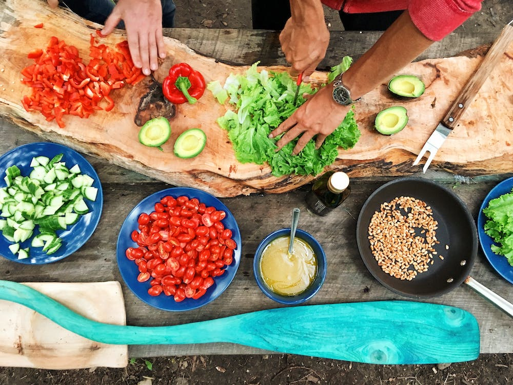
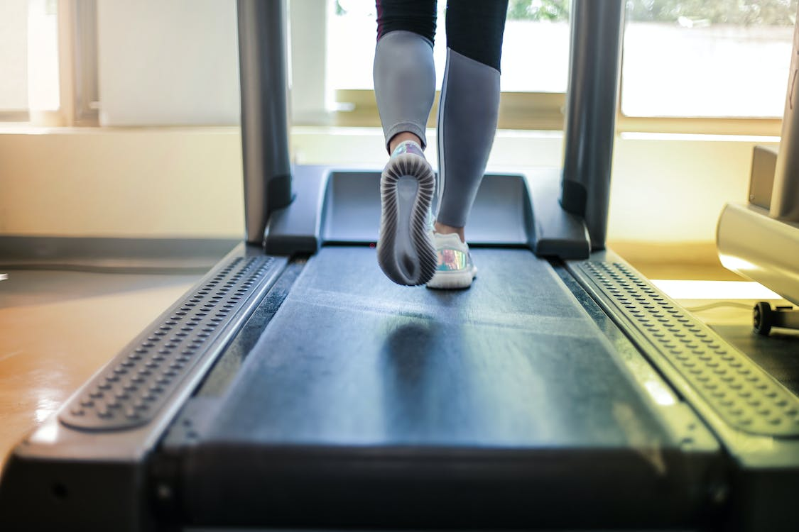

Growing up I honestly never liked cooking. It wasn't until I started living on my own that I became fond of it. I grew up eating mexican dishes only-which were great, im not complaining BUT of course I wanted to try different foods but never had the want to go in the kitchen and do it myself. I guess its something about having my own space, no one around to bother me that makes me love being in the zone, following recipes and adding my own twist to them. I was scared I would be surviving off of simple meals but im happy I learned how to cook a variety of dishes. Some of my favorite recipes are Honey garlic salmon and Creamy Salmon lasagna roll ups
I have always been an active person. Growing up I played soccer and did gymnastics. I was more focused on just being in shape but once I learned about body recomposition my interest for working out grew. I started researching about what foods to eat when you're on a certain diet, what foods hold a lot of protein, lifting weights and focusing each day on different body parts to get the best results, how the muscles grow, etc. I currently go to Lifetime Fitness 5 times a week and take pilates classes at least once a week. If I don't have time to go in person, I like to go on Cho pilates. It's an online class you can do from the comfort of your own home.

I enjoy doing make-up,hair and eyelash extensions. I started doing make-up and hair 10 years ago. Some of my favorite make-up brands are Too Faced and Fenty Beauty. I was an apprentice at a hair salon for a while but I realized I rather stick to doing hair for friends and family. I love it but not enough to do it all day, every day. I went to school and got certified to do eyelash extension 3 years ago and I would say its my favorite thing to do. Its time consuming but I love seeing the process and trying different styles.